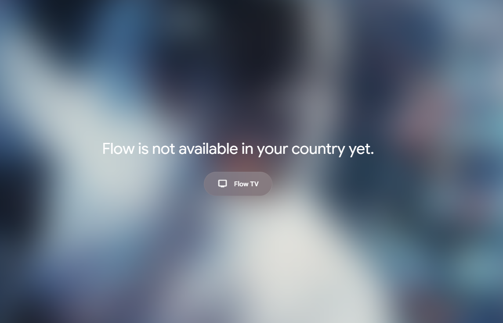
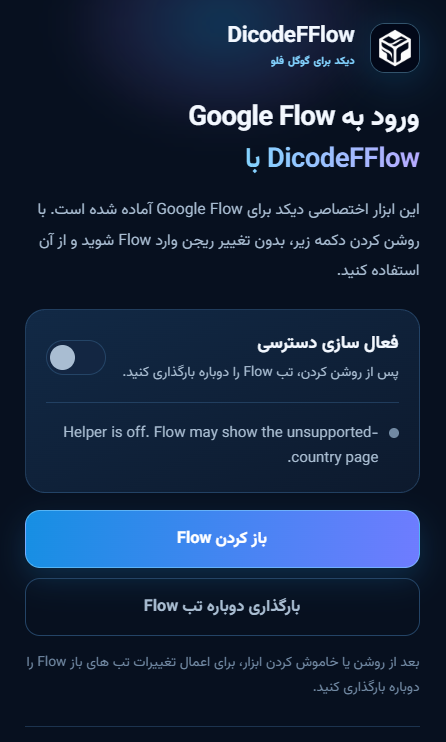

از خود Chrome نصب میشه
فایل رو از حالت فشرده دربیار و پوشهش رو با Load unpacked اضافه کن؛ همین.
اگه موقع بازکردن Google Flow این پیام رو میبینی، Flow is not available in your country، بیا با افزونه DicodeFFlow یه بار دیگه امتحانش کنیم.
فقط یادت باشه ZIP رو قبل نصب، از حالت فشرده دربیاری.

این همون ارورهست راهحل با DicodeFFlowاگه Flow با پیام Flow is not available in your country جلوت رو میگیره، این افزونه کمک میکنه فعالش کنی و صفحه رو دوباره ببینی. نصبش هم از خود Chrome انجام میشه.
فایل رو از حالت فشرده دربیار و پوشهش رو با Load unpacked اضافه کن؛ همین.
از نوار ابزار روشنش کن، تب Flow رو Reload کن و ببین چی میشه.
برای شروع لازم نیست تنظیمات Region حساب Google رو دستکاری کنی؛ البته دسترسی Flow برای همه یکسان نیست.
یه نکته: هیچ افزونهای نمیتونه دسترسی رو برای همه تضمین کنه. اگه ارور موند، ممکنه وضعیت حسابت یا خود سرویس دلیلش باشه.
بعد نصب، پنجرهی DicodeFFlow رو از آیکون افزونهها باز کن. فعالش کن، تب Google Flow رو Reload کن و نتیجه رو ببین.
اول راهنمای نصب رو ببین
دکمه دانلود رو بزن و فایل DicodeFFlow-v1.0.0.zip رو بگیر.
روی فایل دانلودشده کلیک راست کن و Extract رو بزن. پوشهای که ساخته میشه رو یه جای ثابت نگه دار و پاکش نکن.
این آدرس رو توی نوار آدرس Chrome وارد کن:
chrome://extensionsیا از منو برو به Chrome menu → Extensions → Manage Extensions.
توی صفحه Extensions، کلید Developer mode رو روشن کن.
روی Load unpacked بزن و همون پوشهای رو انتخاب کن که Extract کردی.
خود فایل ZIP رو انتخاب نکن؛ اول باید Extractش کنی.
روی آیکون Extensions بالای Chrome بزن، DicodeFFlow رو پیدا کن و Pinش کن.
روی آیکون DicodeFFlow بزن، فعالسازیش کن و بعد Reload رو بزن. حالا دوباره ببین Flow باز میشه یا نه.
افزونه تنظیمات لازم رو از flow.cfcnode.com میگیره. بخشی از کد اصلیش فشرده و مبهم شده؛ پس اگه خواستی قبل نصب، فایلها و مجوزهاش رو توی مخزن ببین.